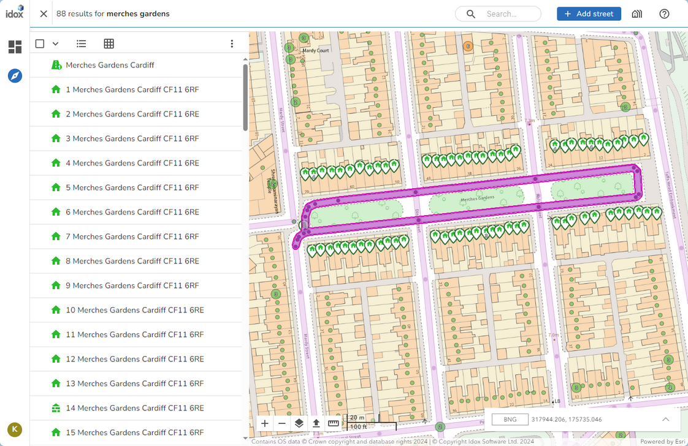

Gazetteer page |
Top Previous Next |
|
The Gazetteer page is the main page for iManage Cloud and is where you can see all the details for records in your gazetteer together with a map to display their location. The Search box is also available at the top right on this page along with the Create Street, Select properties and Help tools. The Gazetteer page is split into two main panes. The left pane displays a variety of information depending upon what you have selected: •An Explorer displaying the results of a search •The attributes / details of a selected property or street •Related information, in tree form, based on the selected property or street •The maintenance history for the selected property or street The right pane displays the map.  |